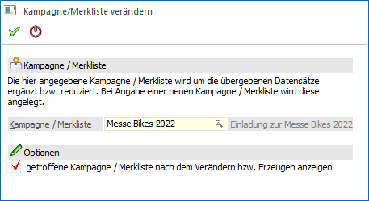

Wenn den Programmbereichen "Namen suchen", "CRM Daten Cockpit", "Kampagnen", "Olap Viewer", "WinLine Tabelle" oder in einer Bildschirmausgabe der Button oder bzw. oder angewählt wird, so öffnet sich das Fenster "Kampagne/Merkliste verändern". Über dieses können Kampagnen bzw. Merklisten erstellt oder verändert werden.

Ø Kampagne / Merkliste
An dieser Stelle wird der Name eingetragen (max. 20 Zeichen), unter welcher die Kampagne / Merkliste gespeichert werden soll. Durch Drücken der F9-Taste kann nach allen bereits angelegten Kampagnen/Merklisten gesucht werden.
Ø betroffene Kampagne / Merkliste nach dem Verändern bzw. Erzeugen anzeigen
Ist diese Option aktiv, dann wird die erstellte bzw. geänderte Kampagne / Merkliste im Programm Kampagnen oder Merkliste (je nach übergebenen Datensätzen) geöffnet und alle Daten angezeigt. Eine Speicherung der Inhaltsveränderung erfolgt erst, wenn in dem jeweiligen Programm der Button "Ok" bzw. die Taste F5 betätigt wird.
Bleibt die Option inaktiv, dann werden die Veränderungen ohne weitere Rückfrage direkt in der Kampagne / Merkliste gespeichert.
Buttons
Ø Ok
Durch Anwahl des Buttons "Ok" bzw. der Taste F5 wird die Kampagne / Merkliste angelegt bzw. verändert.
Ø Ende
Durch Anwahl des Buttons "Ende" bzw. der Taste ESC wird das Fenster geschlossen und keine Kampagne / Merkliste erstellt bzw. verändert.